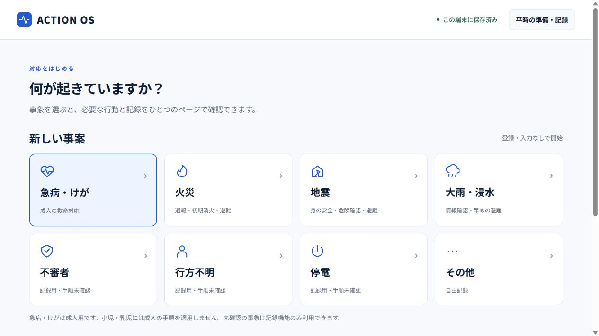

企業の総務担当者
社内で共有する計画を見直し、部署ごとの役割と、責任者が不在のときの判断を整理したい。
企業向けの支援内容支援内容を説明するための想定例です。現場の状況に合わせて内容を決めます。
社内で共有する計画を見直し、部署ごとの役割と、責任者が不在のときの判断を整理したい。
企業向けの支援内容夜間の少人数体制で、宿泊客への案内と情報収集をどう分担するか、訓練で確かめたい。
ホテル向けの支援内容専任の防災担当者がいない。少人数の店でも実行できる備えを、何から始めるか整理したい。
小規模な店舗の相談例以下は支援内容・成果物の例です。必要な内容と作成する資料を相談し、見積もりに含む範囲を事前に決めます。
職員・従業員が学び、
実際の動きを確かめます。
職員研修、机上訓練、避難・初動を確認する実践訓練などを、現場の課題に合わせて設計・実施します。講師・研修登壇のみの依頼も相談できます。
机上訓練とは：災害の場面を想定し、誰がどう動くかを話し合って確かめる訓練です。
実践訓練とは：実際の場所で動き、避難・連絡・役割分担を確かめる訓練です。施設条件と安全管理を踏まえて設計します。
災害時の対応手順と、
事業を続ける計画を整えます。
災害時も事業を続けるための計画（BCP）と、対応マニュアルの作成・見直しを支援します。
既存資料と現場の体制を確認し、初動、優先業務、役割分担、連絡手順を整理します。
定期的な相談と見直しを、
月額・年間の顧問支援で。
夜間、少人数、責任者不在などの状況も伺い、実行できる手順を整理します。
今ある計画や訓練の記録を確認し、必要な見直しから取り組みます。
研修・訓練の振り返りを、役割や手順の更新につなげます。
必要な準備、支援する範囲、作成する資料を確認し、費用をご提案します。内容・費用に合意してから実施します。
施設・店舗の種類、人数、今ある資料、困っていることを伺います。
支援範囲、成果物、日程、実施方法を整理し、見積もりをご確認いただきます。
研修・訓練や計画づくりを実施し、次に改善することをまとめます。
それぞれの現場の課題、支援内容、訓練の想定例をご覧いただけます。
手順の確認・記録を支えるツール
ACTION OSは、事象に応じた行動を確認し、担当・時刻・メモを記録するWebアプリです。対応後や訓練後の振り返りにも使えます。
行動確認・記録ツールの機能と利用範囲
相談できます。現在の人員や資料、困っていることから整理します。どの支援を依頼するか、事前に決まっていなくても構いません。
職員研修、机上・実践訓練、講師登壇を単独でも相談できます。参加者、テーマ、実施時間、場所をもとに内容を組み立てます。
所在地、希望時期、支援内容を確認し、対応可否と費用をご案内します。訪問・オンラインでの対応が可能と一律にお約束するものではありません。料金・対応範囲の説明もご覧ください。
施設の種類、現場の状況、希望する支援内容をお知らせください。支援できる範囲と実施方法を確認してご案内します。
地域・法人種別・対象経費・時期によって異なり、本サービスの費用が対象になるとは限りません。公的支援の確認先を掲載しています。
相談に向けて、施設・店舗の種類や人数、困っていること、希望時期を整理しておくと、支援内容の検討が進めやすくなります。
既存の計画や訓練の記録があれば、その有無もお知らせください。